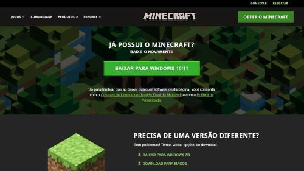

Minecraft é um jogo em que você constrói coisas com blocos, em um mundo virtual aberto e livre para explorar. É o que os gamers chamam de 'sandbox', porque funciona mesmo como uma caixa de areia, em que o único limite para o jogador é a própria imaginação e a prática. No game, é preciso minerar e coletar recursos para construir coisas - ou para sobreviver, mas a gente já chega nessa parte.Não há níveis para superar ou pontos num placar. Você imagina o que quer fazer, junta os recursos que vai precisar e constrói. Existem criações incríveis, que vão desde réplicas de fases de outros games, como Sonic ou Zelda, até recriações de cidades inteiras do mundo real!
Configurações do PC para jogar Minecraft
Requisitos mínimos
Sistema operacional: Windows 10 14393.0 ou superior
Processador: Intel Celeron J4105 ou AMD FX-4100
Memória RAM: 4 GB
Placa de vídeo: Intel HD Graphics 4000 ou AMD Radeon R5
Requisitos recomendados
Sistema operacional: Windows 10 14393.0 ou superior
Processador: Intel i7-6500U ou AMD A8-6600K
Memória RAM: 8GB
Placa de vídeo: NVidia GeForce 940M ou AMD Radeon HD 8570D
Minecraft requisitos mínimos e recomendados para a Java Edition
Requisitos mínimos
Sistema operacional: Windows 7, Mac OS X 10.9, Linux distribuição de 2014 ou mais recente
Placa de vídeo: NVidia GeForce 700 ou AMD Radeon RX 200 com Open GL 4.5
Armazenamento: 4 GB de espaço disponível em SSD
Como baixar Minecraft no PC

jogar Minecraft no PC, Mac ou Linux é preciso baixar e instalar o jogo. Embora o download seja gratuito, para realmente jogar é preciso adquirir uma licença de uso, cujo preço pode variar entre as diferentes plataformas.
Visite o site oficial e vá até a seção de download;
O site vai reconhecer seu sistema operacional e automaticamente selecionar a versão correta para download;
Cliquem em Download para começar a baixar;
Quando o download for concluído, abra o arquivo baixado;
Efetue login com sua conta da Mojang;
Não esqueça que para jogar é preciso comprar uma licença do jogo.